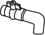
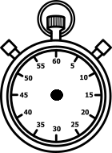

Performance Characteristics of Hydraulic Ram
Objective
To conduct the performance test on hydraulic ram and to plot the operating characteristics.
Apparatus used:
Hydraulic Ram setup, Useful Water Tank, Waste Water Tank, Stop Watch, Measuring Scale etc.
Description Suction Head: Suction head is the term used to describe liquid pressure at pump suction in terms of height of liquid column.
Devivery Head: is defined as the work that needs to be performed by the pump to pump the medium with reference to a defined unit of weight.
Total Dynamic Head (TDH): is the total equivalent height that a fluid is to be pumped, taking into account friction losses in the pipe.
Actual Discharge: The actual discharge of an axial piston pump is usually defined as the difference between the theoretical pump discharge and the total leakage.
Rankines Efficiency: is defined based on the fact that q amount of water is lifted by a height (h2 - h1 = h) by utilizing (Q-q) amount of water.
Start the pump by pressing the start button.


Open the inlet valve and allow the water to flow.

Supply head =
Open the delivery valve and find the delivery pressure.


Delivery pressure =
Delivery head =
Determine the waste water discharge by noting the time required by water to fill the collecting tank upto 10cm height.


Waste water tank
Time required by water to fill 10cm height (H)=
Discharge of waste water =
Q (m3/sec) = (A × H)⁄TimeBreadth = 61 cm
Area (A) = Length * Breadth = 4697 cm2
Determine the useful water discharge by calculating the time required by water to collect upto 10cm in the collecting tank.
Useful water tank
Time required by water to fill 10cm height (H) =
Discharge of useful water =
q (m3/sec) = (A × H)⁄TimeBreadth = 30 cm
Area (A) = Length * Breadth = 900 cm2
Observation
Supply head (Hs) = 2.9m
Delivery head (Hd) =
Discharge of waste water (Q) =
Discharge of useful water =
Result
D'Aubuissons efficiency =
ηA(%) = (q × Hd)⁄(Q+q)HsRankine's efficiency =
ηR (%) = q (Hd-Hs)⁄(Q × Hs)Lift to fall ratio [(Hd - Hs )⁄Hs] =
Lift to Fall Ratio =(Hd - Hs )⁄HsLift to fall ratio [Hd⁄Hs]
Lift to Fall Ratio =Hd⁄HsRepeat the same steps with increment in delivery pressure in equal intervals
Characteristic Curves

Trial =
Both ends of the pipe must be trimmed to ensure parallel faces.